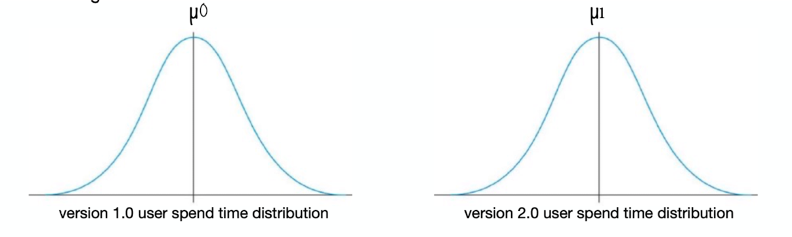

Hypothesis testing simplified
Wiki says - A statistical hypothesis test is a method of statistical inference used to decide whether the data at hand sufficiently support a particular hypothesis. In this blog we will try to understand this definition more intuitively with an example.
In this section we will try to understand following things:
1. Why do we need hypothesis testing?
2. Understanding hypothesis testing
3. Problem on hypothesis testing
1. Why do we need hypothesis testing?
In the real world we do a lot of observations or experiments and we would like to validate those experiments.
For example:
-whether the new drug is better than the previous one.
-whether the drug had an impact on the growth rate of a population.
-whether the new refrigerator significantly reduces the power consumption
-whether market sentiment increased after the new budget announcement.
2. Understanding hypothesis testing
Let's take an example to understand hypothesis testing more intuitively: Apple has released a new
version of the app. They have 2 distributions of user's-spend-time, corresponding to old and new versions
respectively. They want to know whether a new version made any significant improvement over the user's
spend time.
We will try to understand this problem in 5 steps:
step1: Following diagram shows the distribution for user spend time on both the versions of the app individually.

As you can see there are 2 distributions
a) Version 1.0 user-spend-time distribution with mean = µ0
b) Version 2.0 user-spend-time distribution with mean = µ1
Step2: From the problem statement we can understand that we want to see whether there is a
significant improvement in the mean users-spend-time in the latest version. From this we already know that µ1 > µ0 but whether this improvement is significant or fluke
is the question that we want to address.
Step3: Lets plot version 2.0 mean on version 1.0 distribution. It could be anywhere above µ0 but lets
randomly select a place to plot it, which helps us to understand further concepts better
What does the above diagram or distribution implies?
- We are trying to see where exactly the mean of version 2 is situated in version 1 distribution.
- To put it in another words what is the probability of seeing µ1 in version 1.0 distribution
- Mathematically
P(x==µ1 in version 1.0 distribution)
As we can remember normal distributions are continuous distributions.. Probability at any point
in normal distribution is always 0. So, instead of finding the probability of seeing µ1 in version 1 distribution as follows:
P( x==µ1 in version 1.0 distribution)
we can find the probability of seeing µ1 or any greater value in version 1 distribution:
P( x>=µ1 in version 1.0 distribution)
Why x>=µ1 ? To answer this question let's have a look at the above distribution. If µ1 is a significant
improvement then anything above that would also make it a significant improvement too right?
Hence, we are looking at this area:
Step4: We already know that the area under probability distribution is 1. In the version 1 distribution
we really don't know where exactly µ1 is situated.
What it implies version 2 mean i.e µ1 being very close to version 1 mean i.e µ0 in version 1 distribution ?
Ans: It says the probability of seeing x>=µ1 in version 1 distribution is very high.
In other words the if area under normal distribution corresponding to x=>µ1 is more then there
is no significant change or difference
Hence, version 2 is not a significant improvement over version 1
What it implies version 2 mean i.e µ1 being very far from version 1 mean i.e µ0 in version 1 distribution ?
Ans: Mathematically it says the probability of seeing x>=µ1 in version 1 distribution is very low.
In other words the if area under normal distribution corresponding to x=>µ1 is less then there
is a significant change or difference
Hence, version 2 is a significant improvement over version 1
Step5: How do we know whether the area is more or less ?
For this we need a threshold. This threshold is usually called as significance value.
if area under normal distribution corresponding to x=>µ1 is more than threshold area we can say
version 2 is not a significant improvement over version 1
else area under normal distribution corresponding to x=>µ1 is less than threshold area we can say
version 2 is a significant improvement over version 1
area under normal distribution corresponding to o x=>µ1 is referred as p-value
3. Problem on hypothesis testing
Prerequisite alert: Following problem requires Understanding of "features of distributions like mean, median, mode, range, z-score, variance, standard deviation etc.." If you are not familiar with these please take a look at this blog - Features of any distribution
Example Problem: A teacher claims that the mean score of students in his class is greater than 82 with a standard deviation of 20. If a sample of 81 students was selected with a mean score of 90 then check if there is enough evidence to support this claim at a 0.05 significance level.
Solution: This is one tailed test. Since teacher is interested in whether observed mean is grater than population mean
Null Hypothesis : Population mean = Sample mean
Alt Hypothesis: Population mean < Sample mean
population statistics: μ=82 σ=20
sample statistics: μm=82 n=81
significance level: α=0.05
Calculating z-score: z = (x – μ) / (σ / √n)
= ( 90-82) / ( 20/√81)
z-score=3.6
Hence observed mean is 3.6 standard error of mean above population mean
Calculating p-value: We want to calculate the area under normal distribution which
is above 3.6 SD away from mean
p-value = Total area above mean - Total area till 3.6 SD above mean
= 0.50 - ztable(3.6)
= 0.50 - 0.4998
p-value = 0.0002
Hence p(x>= μm | Null hypothesis is true ) or p-value is 0.0002
Conclusion:
Since significance level or α > p-value we can reject null hypothesis
Hence there is a significant improvement in the mean of score
References
https://www.youtube.com/watch?v=KS6KEWaoOOE
https://www.youtube.com/watch?v=5ABpqVSx33I
https://www.youtube.com/watch?v=-FtlH4svqx4
https://math.stackexchange.com/questions/1796478/sample-standard-deviation-given-population-standard-deviation
https://www.scribbr.com/methodology/population-vs-sample/#:~:text=A%20population%20is%20the%20entire,t%20always%20refer%20to%20people.
https://towardsdatascience.com/hypothesis-testing-z-scores-337fb06e26ab
https://onlinestatbook.com/2/sampling_distributions/samp_dist_mean.html
https://www.statisticshowto.com/probability-and-statistics/z-score/
https://www.analyticsvidhya.com/blog/2020/06/statistics-analytics-hypothesis-testing-z-test-t-test/
https://math.stackexchange.com/questions/504288/what-situation-calls-for-dividing-the-standard-deviation-by-sqrt-n
hhttps://www.cuemath.com/data/z-test/